vignettes/pyramid.Rmd
pyramid.RmdThis vignette illustrates ‘metanetwork’ through a pyramid network example. The packages required to run the vignette are the following:
We first generate a pyramid network using ‘igraph’ and represent it using ‘ggnet2’
library(igraph)
library(network)
library(intergraph)
library(GGally)
n = 5
#generate a lattice
g = igraph::make_lattice(dim = 2,length = n,directed = T)
#deleting nodes and edges
nodes_to_rm = c()
for (k in 1:(n-1)){
nodes_to_rm = c(nodes_to_rm,((k-1)*n+1):(k*n - k))
}
g = delete_vertices(g,nodes_to_rm)
g = delete_edges(g,c("7|12","8|13","9|14","2|5"))
V(g)$name = LETTERS[1:vcount(g)]
#representing the lattice using ggnet package
network = asNetwork(g)
ggnet2(network, arrow.size = 7,size = 3 ,arrow.gap = 0.025, label = T)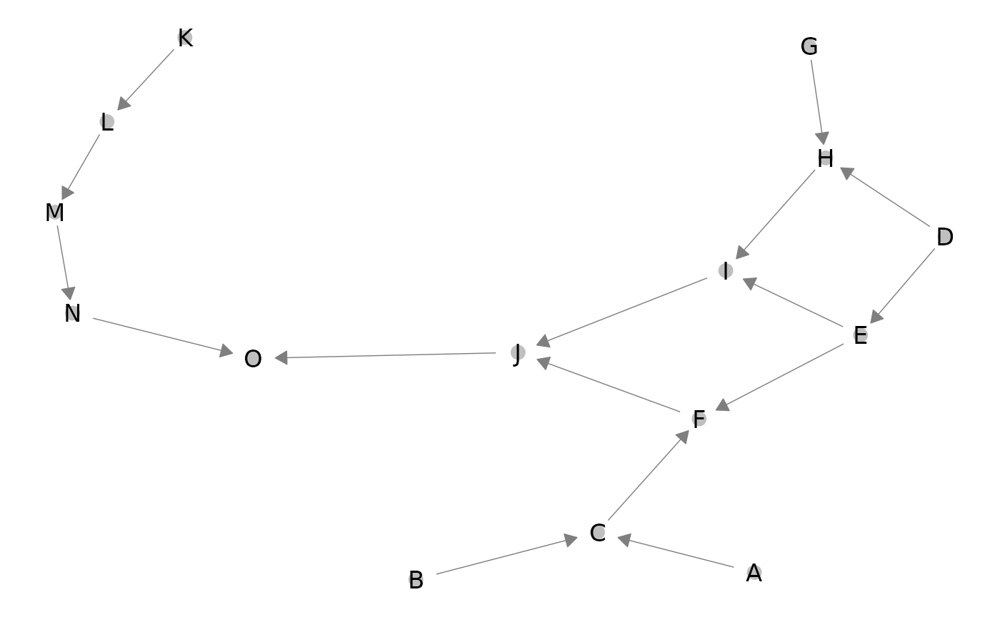
Notice that ‘ggnet2’ default layout algorithm (Fruchterman-Reingold algorithm, a force directed algorithm) is non-reproducible. Moreover, x-axis and y-axis do not have any ecological interpretation.
ggnet2(network, arrow.size = 7,size = 3 ,arrow.gap = 0.025, label = T)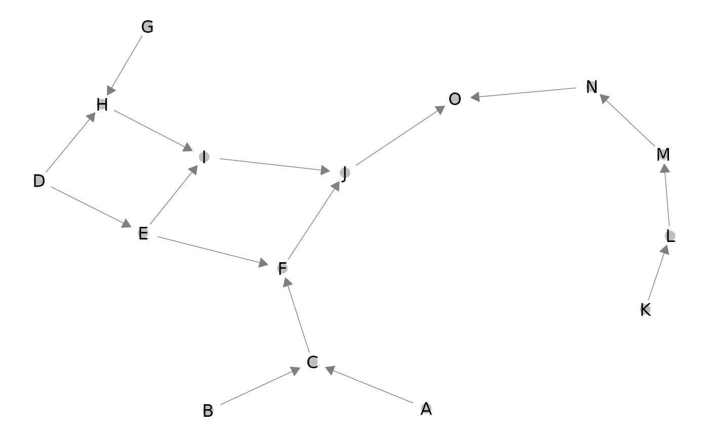
From the lattice metaweb and abundance table, build a S3 object of class ‘metanetwork’ using build_metanetwork
#building metanetwork object
meta0 = build_metanet(metaweb = g,abTable = presence)
class(g)## [1] "igraph"
class(meta0)## [1] "metanetwork"method print prints a summary of the considered metanetwork.
print(meta0)## metaweb has 15 nodes and 16 edges
## 2 local networks
## single resolution availableA ‘metanetwork’ object consists in a list of ‘igraph’ objects:
$ab indicating the local relative abundance of each node and graph attribute $nameindicating "metaweb"
$ab indicating the local relative abundance of each node in each network and graph attribute $name indicating local network names, that is rownames of the abundance table.
meta0$b$name## [1] "b"
meta0$metaweb$name## [1] "metaweb"##
## 0.0833333333333333
## 12##
## 0.05 0.1
## 10 5Metaweb node relative abundances are the mean of the local relative abundances. Additional objects like abTable or trophicTable can be included in a ‘metanetwork’ object
‘metanetwork’ package enables 2D network representation with x-axis equals to trophic levels. To compute trophic levels, ‘metanetwork’ implements the method, based on laplacian matrix, described in: MacKay, R. S., S. Johnson, and B. Sansom. “How directed is a directed network?.” Royal Society open science 7.9 (2020): 201138.
The metaweb needs to be connected for trophic levels to be unique. Local networks can however be disconnected (see Ref). A method compute_TL allows computing trophic levels and storing it as node attribute $TL of each network.
#compute trophic levels for metaweb and local networks
meta0 = compute_TL(meta0)
V(meta0$metaweb)$name## [1] "A" "B" "C" "D" "E" "F" "G" "H" "I" "J" "K" "L" "M" "N" "O"
V(meta0$metaweb)$TL## [1] 0.000000e+00 0.000000e+00 1.000000e+00 4.440892e-16 1.000000e+00
## [6] 2.000000e+00 4.440892e-16 1.000000e+00 2.000000e+00 3.000000e+00
## [11] 0.000000e+00 1.000000e+00 2.000000e+00 3.000000e+00 4.000000e+00‘metanetwork’ implements a layout algorithm, ‘TL-tsne’, specifically designed for trophic networks, based on trophic levels and on dimension reduction of graph diffusion kernel.
Diffusion kernel is a similarity matrix between nodes according to a diffusion process. Let \(G\) be a directed network, \(\mathbf{A}\) its adjacency matrix and \(\mathbf{D}\) its degree diagonal matrix. The laplacian matrix of \(G\) is defined as:
\[\begin{equation} \mathbf{L} = \mathbf{D} - \mathbf{A} - \mathbf{A}^{T} \end{equation}\]
The diffusion kernel is then defined as (Kondor & Lafferty, 2002):
\[\begin{equation} \textbf{K} = \exp(-\beta\mathbf{L}) = \sum_{k \geq 0} \frac{(- \beta\mathbf{L})^k}{k!} \end{equation}\]
with \(\beta\) a positive parameter. Diffusion kernel measures similarity between pairs of nodes by taking into account paths of arbitrary length. It does not restrict to direct neighbours.
\(\beta\) is the single parameter of the diffusion kernel. It controls the weight given to the different paths in the diffusion kernel. It is also analogous to the diffusion constant in physics. We’ll see through examples its importance in squeezing networks.
ggmetanet function
The main metanetwork representation function is ggmetanet. It allows representing metaweb and local networks using ggnet and both layout algorithms. ggmetanet plots the metaweb of the current metanetwork by default.
#ggmetanet#
ggmetanet(metanetwork = meta0,beta = 0.1)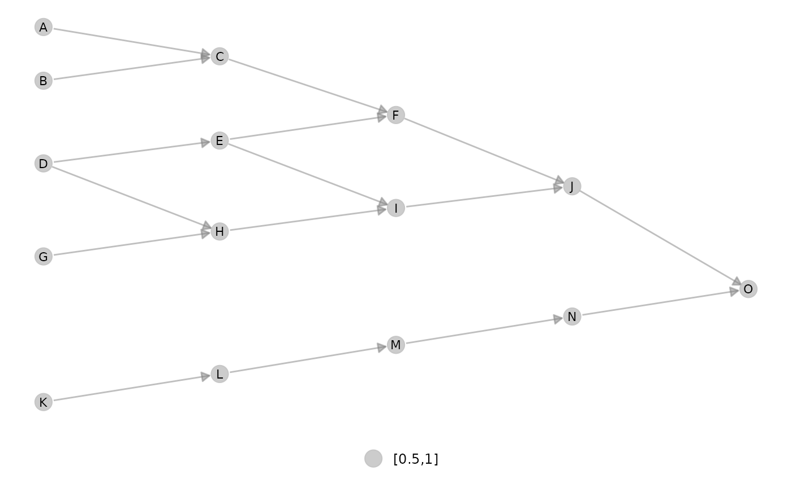
#ggmetanet#
ggmetanet(metanetwork = meta0,beta = 0.45)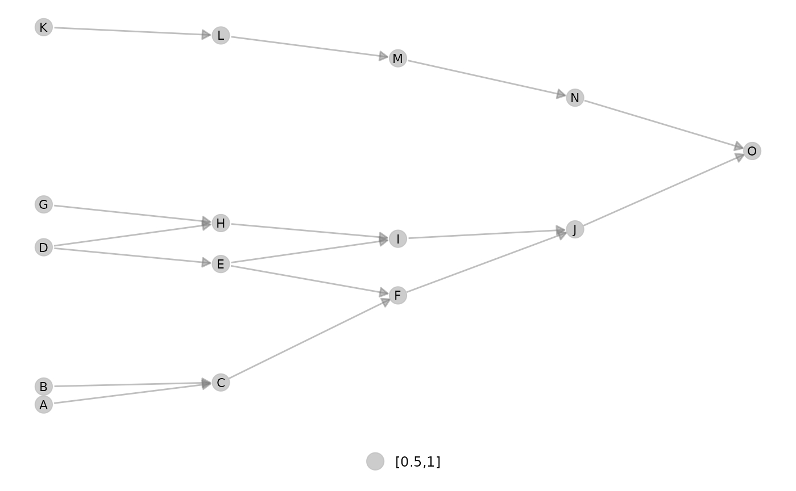
ggmetanet can also represent local networks (with specific layout)
ggmetanet(g = meta0$b,beta = 0.1,metanetwork = meta0)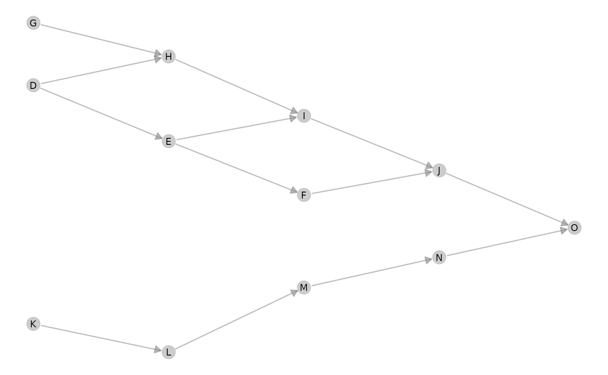
Increasing beta squeeze y-axis
ggmetanet(g = meta0$b,beta = 1,metanetwork = meta0)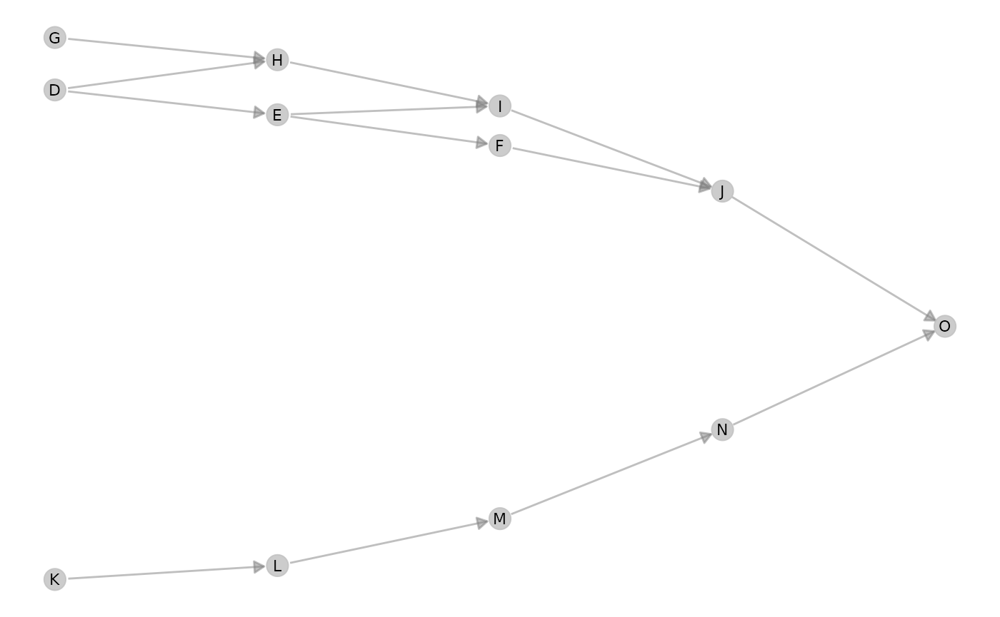
Moreover, it clusters nodes belonging to different ‘branches’. They become more and more similar when beta is increased.
Representing disconnected networks
If the metaweb needs to be connected, local networks can be disconnected due to sampling effects. In that case, trophic levels are computed using metaweb trophic levels. The basal species of each connected component has a trophic level equals to its value in the metaweb.
ggmetanet(g = meta0$a,beta = 0.45,metanetwork = meta0)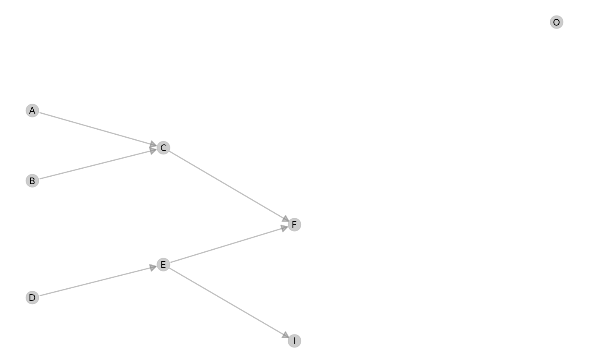
diff_plot function
In order to compare local networks, a diff_plot function is implemented. It colors nodes according to their presence/absence or variation in abundance in both networks.
diff_plot(g1 = meta0$a,g2 = meta0$b,beta = 0.1,mode = 'TL-tsne',metanetwork = meta0)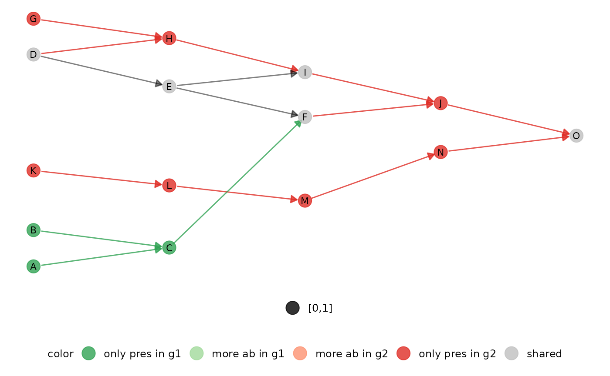
ggnet configuration parameters
In order to fine tune network plots, it is possible to modify ggnet parameters in metanetwork. An object ggnet.default is stored and wraps the different visualisation parameters. Change it to modify the plot.
ggnet.custom = ggnet.default
ggnet.custom$edge.size = 3*ggnet.default$edge.size
ggnet.custom$label.size = 7
ggmetanet(beta = 0.1,metanetwork = meta0,
ggnet.config = ggnet.custom)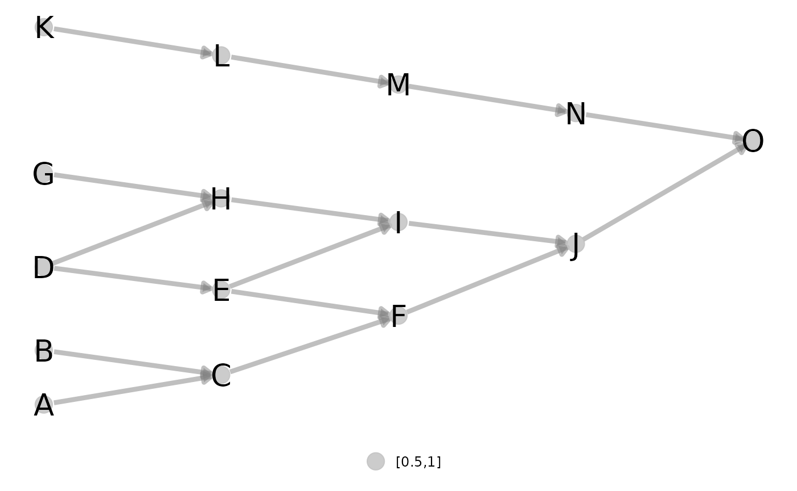
For network representation reproducibility and to gain computation time, we recommend to store ‘TL-tsne’ layout after computation. To do so, use the method attach_layout. Once the layout computed, it is attached to the network as node attribute.
#for the metaweb
meta0 = attach_layout(meta0,beta = 0.1)
V(meta0$metaweb)$layout_beta0.1## [1] 42.434415 30.143352 35.721345 11.248338 16.447737 22.285336
## [7] -9.983870 -4.308974 1.051719 5.996519 -43.138160 -36.739720
## [13] -30.113613 -23.653007 -17.391416
#for a local network
meta0 = attach_layout(metanetwork = meta0,g = meta0$a,beta = 0.1)
V(meta0$metaweb)$layout_beta0.1## [1] 42.434415 30.143352 35.721345 11.248338 16.447737 22.285336
## [7] -9.983870 -4.308974 1.051719 5.996519 -43.138160 -36.739720
## [13] -30.113613 -23.653007 -17.391416Then, any call of ggmetanet or vismetaNetwork will use the computed layout for the desired \(\beta\) value.
ggmetanet(meta0,beta = 0.1)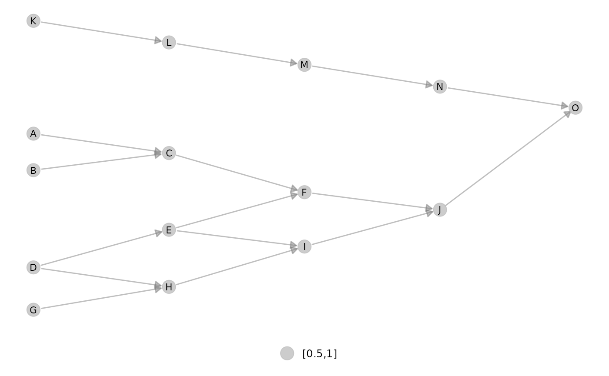
Using that way, network representation is reproducible.
#calling again ggmetanet
ggmetanet(meta0,beta = 0.1)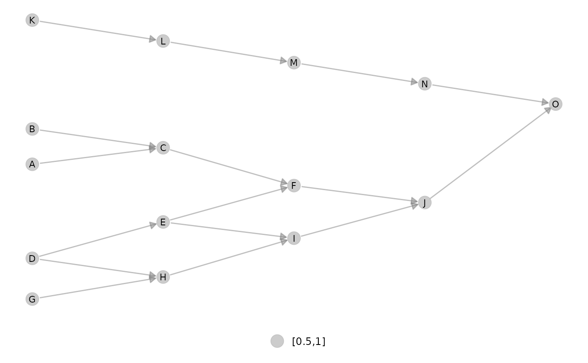 Once the layout computed for the metaweb, it can be used to represent local network or difference network using layout_metaweb = T
#ggmetanet
ggmetanet(meta0,beta = 0.1,layout_metaweb = T)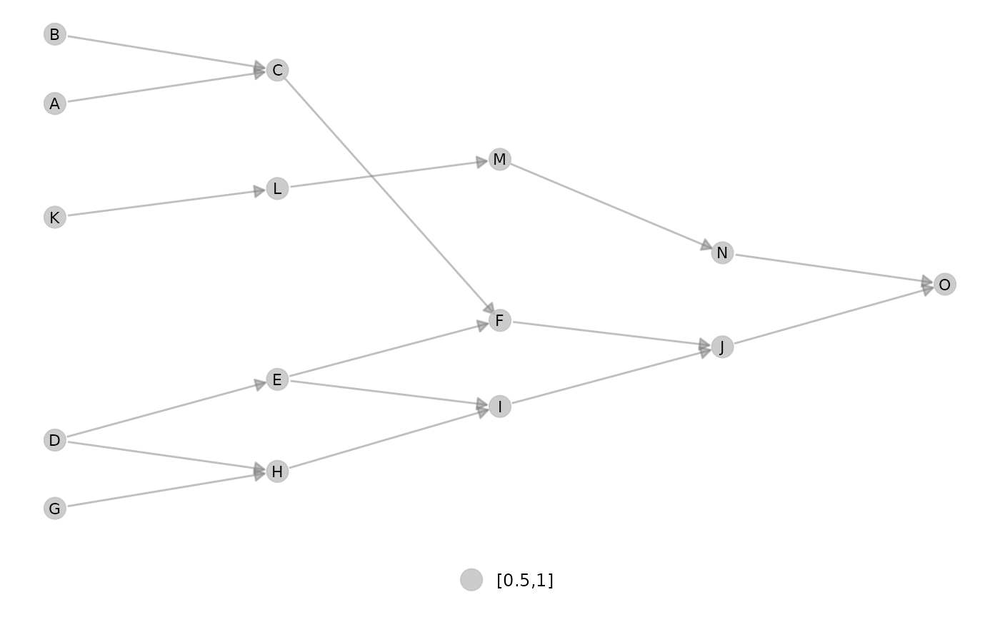
#diffplot
diff_plot(meta0,meta0$a,meta0$b,beta = 0.1,layout_metaweb = T)## Modifying local networks